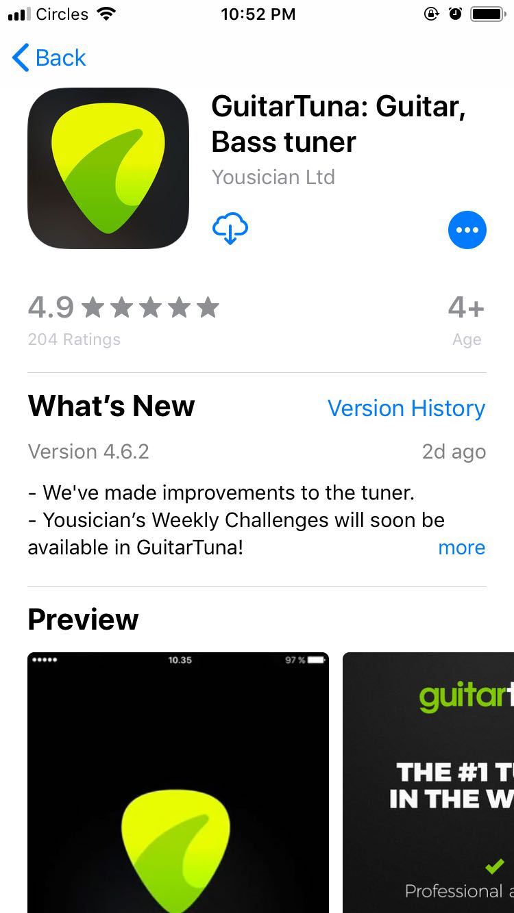
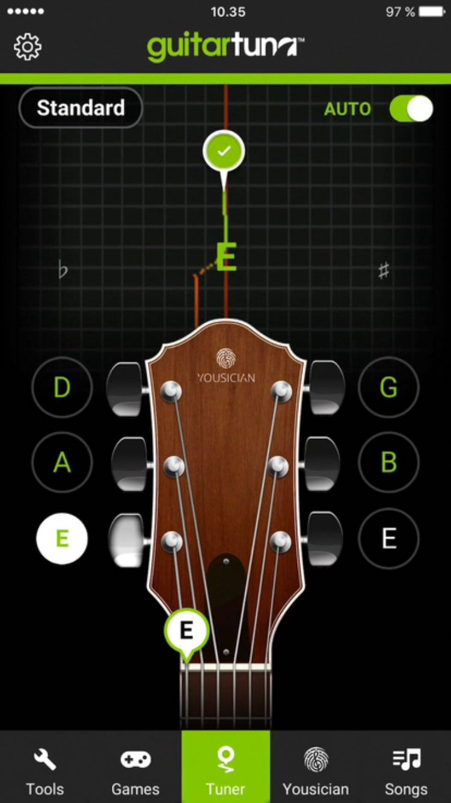

作为吉它新人刚刚从商店里购买了一把自己心爱的吉它，带回家后第一件事往往都是需要把吉它的6根弦的音给调准备了，这是每一位开始学习吉它的新人都必须掌握的技能，即使第一次卖家帮助你调好了，之后你一定还是需要自己学会调试，因为任何调好音的吉它都会随着时间的推移而失去原有的音准，即使你把吉它放包里，1个月后音准一定会出现问题，这是无法避免的情况，因此对于新手来说，这是刚开始学习吉它最最重要的技能之一，今天我就来教各位如何在5分钟快速上手吉它调音，这样以后就再也不需要麻烦别人了，自己简单动动手就可以轻松完成这项看起来比较难实则非常容易的一项任务。
第一步： 下载调音软件app (叫做 guitar tuna) ios 和 android都可以在在线商店里下载
在商店搜索 guitar tuna 即可，看到如下图界面显示即可下载了：

第二步： 打开 app 后点击中间的 调音器按钮 开始调音
这个步骤你需要同时拿起你的吉它从第一根弦开始拨，guitar tuna 会自动检测你刚才拨动吉它的第一弦的声音是高了还是低了

第三步： 正式调节弦的高低
这里就拿第一根弦作为例子，如果看到
| 音高低 | 茦略 |
|---|---|
| 指示灯在左边 | 说明声音低了 - 顺时针拧 |
| 指示灯在右边 | 说明声音高了 - 逆时针拧 |
刚开始你可能会感觉记不住，但是其实完全不用去特地记，这里教大家一个最简单的方法，你只需要左右稍微拧下感受下哪一边拧感觉变松或者变紧，不用说变紧的方向就是往高调，变动当然就是往低调。
第四步：一根一根重复即可
完成第三步之后就非常简单了，接下来的工作就是慢慢的一根根按照之前的步骤调节了
好了，是时候自己开始进行调音了，不要再去麻烦别人了哟～